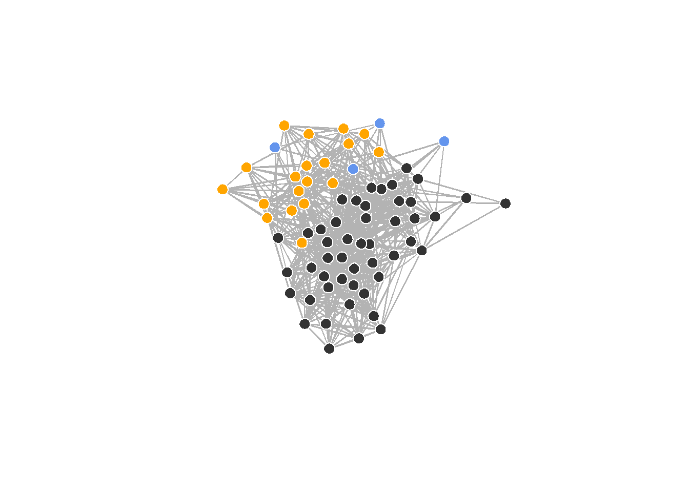
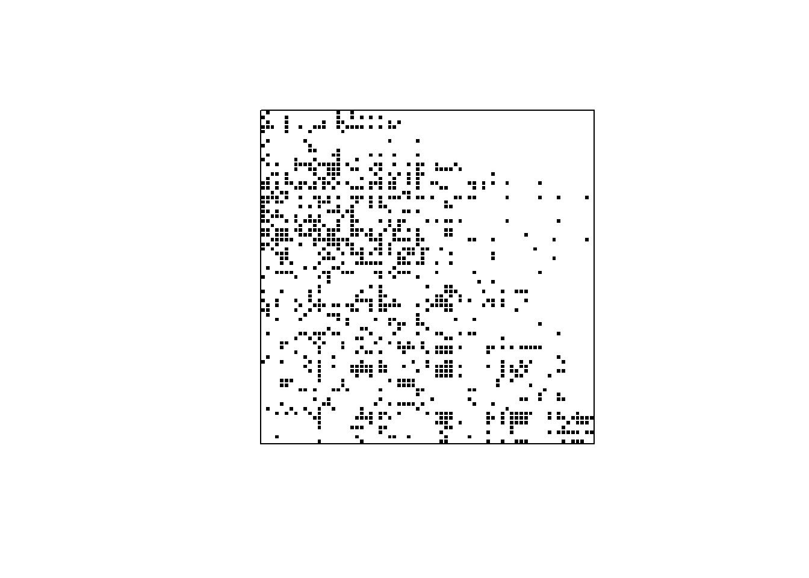
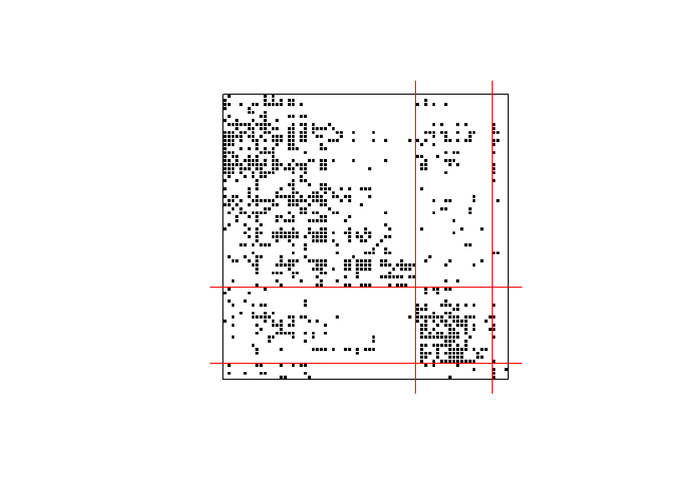
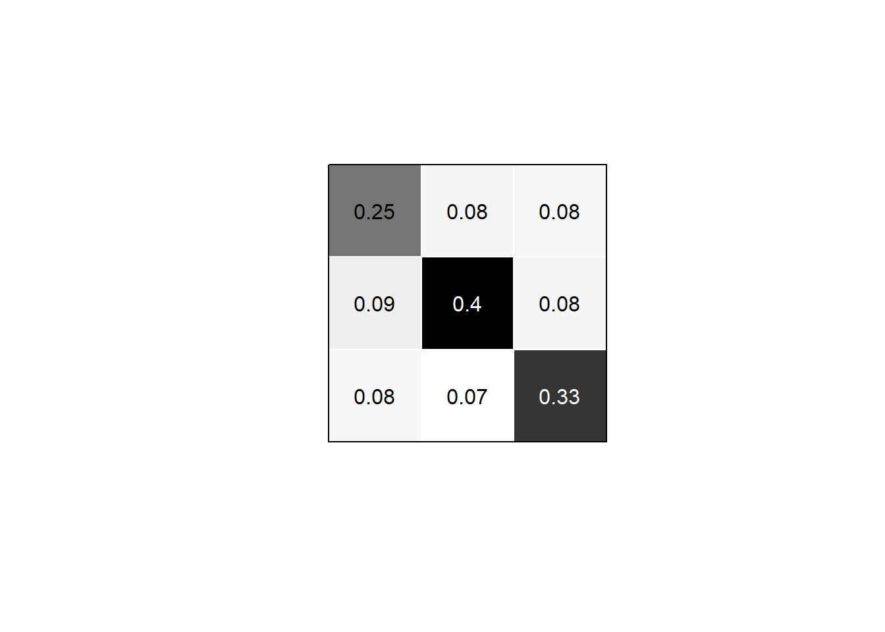

library(statnet)Subgroups and blocks
In many empirical applications, the nodes in a network belong to different groups, such as employees belonging to teams, students belonging to subjects, or countries belonging to economic blocks. In these situations, we are often interested in how the network is structured with respect to its subgroups, e.g., in terms of intra- and inter-group cohesion.
In the following, we investigate how Lazega’s lawyers connect within and across the three office locations of the firm with their advice ties.
As before, we start by loading our packages and reading the network from data:
adjmat <- read.table("data/lazega_advice.csv",
sep =";",
header = TRUE,
row.names = 1,
check.names = FALSE)
adjmat <- as.matrix(adjmat)
net <- network(adjmat)In addition to the network, we also load the attribute data for the lawyers into a data frame:
attrib <- read.csv2("data/lazega_attrib.csv")We are now ready to plot the network with node colors indicating office affiliation:
# nicer colors
palette(c("grey20", "orange", "cornflower blue"))
gplot(net, gmode="graph",
vertex.col=attrib$office,
vertex.cex=1.5,
vertex.border="white",
edge.col="grey70")
While this reveals some aspects of the network’s structure with respect to firm locations, the network is quite dense and it is quite hard to see what is going on.
Blockmodels
Instead of the ‘spaghetti plot’, we can plot the adjacency matrix of the network directly by coloring cells with a realized edge black and leaving the others empty. This is achieved with the plot.sociomatrix(...) function, which has a range of keywords to control whether to draw matrix gridlines and labels. We also pass asp=1 to set the aspect ratio of the plot to 1 so that our matrix is visually square:
plot.sociomatrix(net, asp=1, drawlines=FALSE,
drawlab=FALSE, diaglab=FALSE)
This looks nice but we lost the information about office affiliations in the process. To get the offices back into the picture, we can permute the adjacency matrix (reordering rows and columns synchronously) so that nodes in the same office are next to each other in the matrix.
One way to achieve this in R is via the blockmodel(...) function, which also does some other useful things. It takes a network and a vector of group indices as arguments:
bm <- blockmodel(net, attrib$office)
bm
Network Blockmodel:
Block membership:
1 2 3 4 5 6 7 8 9 10 11 12 13 14 15 16 17 18 19 20 21 22 23 24 25 26
1 1 2 1 2 2 2 1 1 1 1 1 1 2 3 1 1 2 1 1 1 1 1 1 2 1
27 28 29 30 31 32 33 34 35 36 37 38 39 40 41 42 43 44 45 46 47 48 49 50 51 52
1 2 1 2 2 2 2 1 2 1 3 1 1 1 1 1 1 3 1 2 3 1 1 2 2 1
53 54 55 56 57 58 59 60 61 62 63 64 65 66 67 68 69 70 71
1 1 1 1 1 2 2 1 1 1 2 1 1 1 1 1 1 1 1
Reduced form blockmodel:
1 2 3 4 5 6 7 8 9 10 11 12 13 14 15 16 17 18 19 20 21 22 23 24 25 26 27 28 29 30 31 32 33 34 35 36 37 38 39 40 41 42 43 44 45 46 47 48 49 50 51 52 53 54 55 56 57 58 59 60 61 62 63 64 65 66 67 68 69 70 71
Block 1 Block 2 Block 3
Block 1 0.24734043 0.07894737 0.07812500
Block 2 0.08662281 0.40350877 0.07894737
Block 3 0.07812500 0.06578947 0.33333333Printing the blockmodel object shows us the group affiliations, the reordered node indices, and the block density matrix. The latter will become more apparent when we plot the blocked adjacency matrix.
While there is a built-in plotting utility via plot(bm), we here use a slightly adapted version to again have the option to suppress labels and gridlines:
Plotting function
plot_blockmodel <- function(bm, ...) {
plot.sociomatrix(bm$blocked.data, ...)
for (j in 2:dim(bm$blocked.data)[1]) {
if (bm$block.membership[j] != bm$block.membership[j - 1]) {
abline(v = j - 0.5, h = j - 0.5, lty = 1, lwd=1, col="red")
}
}
}par(pty="s") # square plotting area for gridlines
plot_blockmodel(bm, asp=1, drawlines=FALSE,
drawlab=FALSE, diaglab=FALSE)
The rectangular segments in the matrix produced by the grouping of the nodes are called blocks. The values in the 3 by 3 block density matrix contained in the blockmodel object refer to the network density in each of these (i.e., the number of realized edges divided by the number of cells, which inidicate possible edges). We can also extract the block density matrix from the blockmodel object:
bm$block.model Block 1 Block 2 Block 3
Block 1 0.24734043 0.07894737 0.07812500
Block 2 0.08662281 0.40350877 0.07894737
Block 3 0.07812500 0.06578947 0.33333333This tells us that among members of office 2, more than 60% of all possible edges are realised, while between office 1 and office 2 only about 14% of edges are present.
The image matrix
The block density matrix can itself be seen as a reduced-form, weighted network among the groups, where loops are meaningful because they indicate density within groups. This network is sometimes also called the image graph.
Instead of plotting the full adjacency matrix, we can also plot the image graph, using color hue to represent density weights:
plot.sociomatrix(bm$block.model,
asp=1, drawlines=FALSE,
drawlab=FALSE, diaglab=FALSE)
# also show density values as text
text(round(bm$block.model, 2),
x = rep(1:3, each=3),
y = rep(1:3, times=3),
col=ifelse(bm$block.model > .3, "white", "black"))
Blockmodels and matrix-based visualization are simple but powerful tools to show group structure in networks and combine nicely with methods that don’t rely on exogeneous groupings (like office affiliations) but instead identify groups from the network structure itself, such as community detection and generalized blockmodeling.